Stitches and Seams
In describing the stitches and seams used to make shoes, or do any other sort of
leatherwork, it soon becomes clear that the traditional description conventions that have
come to us from sewing with fabric are inadequate to that task with leather. Up to a
point, certainly, but soon things become needlessly confused. Moreover, shoemakers have
their own nomenclature, much of which is unique to them. Further exacerbating the problem
is that archaeologists and shoe conservators have created a jargon for describing shoes
that is different from that used by shoemakers, either now or historically. The reasons
for this are fairly simple, and mostly derive from the fact that the study of mechanics of
shoe construction has a different focus from making shoes as a profession. One is
interested in individual techniques, one in process. Neither is better than the other.
I have tried to work with these varied glossaries, and I think I have compiled
something that should serve to make this a bit more clear. Wherever possible, I will try
to describe the various sets of terms, as well as any other terms I have found used in the
different sources. The variations in jargon are easier to make sense of if you think of
the more scientific terms not so much as labels than as descriptions.
I have tried to stick to Olaf Goubitz's formatting for representing seams and
stitching, as that appears to be the emerging standard (for good reason), although I may
have strayed in practice in my presentation. If so, this is likely my fault, rather than a
failure of the typology that has been developing.
As with the Glossary, most of these terms will be modern.
Those that are medieval shoemaking terms will be noted in italics. Modern
shoemaking jargon terms will be in bold face, and given preference.
Terms that are not documentably medieval, but likely are, will be given in bold
faced italics. Modern archeological jargon terms will be underlined
(Please try not to confuse these with hyperlinks, which are also underlined).
Specific sources will be named in [brackets]. Those terms marked with an Asterisk (*) are,
as far as I know, unique to this document.
Examining seams from the most basic level, and moving to the more
complex, the most basic point in shoemaking is the "Hold":
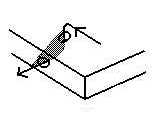
The Hold is the amount of the leather captured within the stitch, determined by how
far back from the edge you pierce and how deeply you pierce, and how far apart you piece
the leather (Note: depending on how you look at it, the picture above only shows a quarter
of a Hold. The rest of the hold is the other half of the piece of leather shown, and the
stitching area of any other peice of leather used). These are all separate variables that
must be taken into account.
The most basic level of stitching is the hole that goes through the leather. Unlike
sewing with cloth where the needle almost always goes from one side of the cloth to the
other, in working with leather there are three types of holes that can be made, and from
that are the five basic "stitches" (Flesh/Grain, Edge/Flesh, *Edge/Grain.
Flesh/Flesh, Grain/Grain). (Note that most shoemaker's do not define their work quite like
this. In the traditional Shoemaking terminology, the first of these is either
"Stabbing" or "Stitching". The remainder of these terms refer to
"Sewing".
The following section is divided into Basic Holds, Seams, Combinations, and Decorative Stitching.
(It should be noted that for the sake of ease only, these three have been split into
four tables on four pages)
| Name |
Artistic
Appearance |
Cross-Section |
Stitch Holes |
General
Appearance |
Drawing
Convention |
Notes & Application |
| Stabbing or Stitching (Flesh/Grain) |
|
 |
|
|
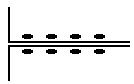 |
The hole goes in one side and comes out the other. Note that this is
"stabbing" if done with a straight awl, and "stitching" if done with
either a straight or curved awl. |
| Split Hold Sewing (Edge/Flesh) |
|
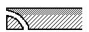 |
|
|
|
The hole goes in the flesh side and comes out the edge. This is the most
commonly used seam in Medieval Shoemaking. The term is from the fact that the needle
"splits" the leather. |
| Split Hold Sewing (*Edge/Grain) |
|
 |
|
|
|
The hole goes in the grain side and comes out the edge. Note that in most
cases this appears to be commonly referred to as "flesh-edge", regardless of the
use of the grain side of the skin. |
Blind Split
Hold (Tunnel Stitch; Flesh/Flesh
Sewing;
Tunnel Stitch;
Caterpillar
Stitch; Clump
Stitch) |
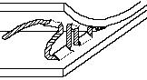 |
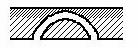
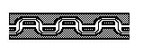 |
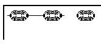 |
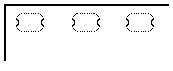 |
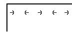 |
Ok, there really isn't a shoemaking term for this stitch, except
perhaps the vague term "Blind Sewing". The hole goes in the flesh side and comes
out the same side. It is used primarily for a type of blind sewing, usually as part of a
whip stitch. A stitch that "tunnels" through the leather and emerging from the
same side, rather than punching through all the way from side to side. All that is needed
for this are a curved awl and a curved or flexible needle. This also requires relatively
thick leather. Punch the holes as you stitch, first on the sole, then on the clump, being
careful to not actually punch through the outer side of the leather. |
Mock
Stitch (Tunnel Stitch;
*Grain/Grain
Sewing; Tunnel Stitch;
Caterpillar
Stitch; Clump
Stitch; Split
Hold; Decorative
Stitching) |
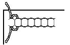 |
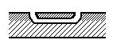
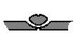 |
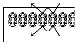 |
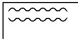 |
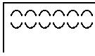 |
Again there is no good shoemaking term for this sort of stitch. The hole
goes in the grain side and comes out the same side. It is used for decorative stitching on
the quarters and sometimes on the vamp of footwear, and on gloves and other clothing |
Return to Contents, or [Next] to
the next page on stitches.
Footwear of the Middle Ages - Some Stitches and Seams Used in Sewing Shoes,
Copyright � 1999 I. Marc Carlson.
This page is given for the free exchange of information, provided the Author's Name is
included in all future revisions, and no money change hands, other than as expressed in
the Copyright Page.